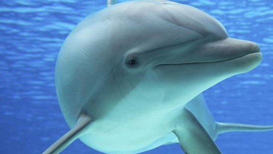

Melihat Si Cantik Lumba – Lumba di Teluk Kiluan
Wisata | 10 Juni 2019 | 12:15 WIB
Bagi para pecinta wisata bahari di Lampung tidak perlu lagi ke tempat yang jauh untuk melihat keindahan alam ini. Karena ternyata, di Lampung sendiri kini telah ditemukan tempat wisata yang telah tertidur sangat lama. Tempat itu dinamai dengan Teluk Kiluan.
Air laut yang menjorok ke daratan ini merupakan surga tersembunyi di pekon Kiluan Negeri, Kecamatan Kelumbayan, Kabuapaten Tanggamus. Pada mulanya tempat ini tidak terkenal seperti Pantai Pangandaran, di pulau Jawa, ataupun pantai Kuta di Bali. Bahkan penduduk lampung sendiri pun belum mengetahui tempat ini. Baru pada sekitar awal tahun 2010, nama Teluk Kiluan mengguncang para pecinta keindahan alam di lampung dan sekitar pertengahan 2011 teluk ini bahkan sudah terkenal hingga sampai ke luar daerah Lampung.
Tempat ini sangat terkenal akan keindahan alamnya yang sangat menyejukkan mata. Suasananya yang masih alami dan airnya yang sangat jernih ditambah lagi dengan tidak ada satupun sampah yang ditemukan di pasir pantai yang halus membuat Teluk Kiluan menjadi primadona bagi para pencinta keindahan.
Tidak hanya memiliki keindahan alam, Teluk Kiluan juga menyimpan sejuta potensi yang sangat luar bisa jika dikembangkan, di antaranya adalah perairannya yang kaya akan ikan, dapat dijadikan tempat wisata pancing, dan alamnya yang indah dapat dijadikan resort.
Daya tarik utama dari Teluk Kiluan adalah melihat atraksi lumba – lumba liar yang berenang bebas di lautan, tentunya, melihat mereka berenang bebas di lautan lebih mengasyikkan daripada menyaksikan atraksi mereka di Gelanggang Samudera Ancol. Ditambah lagi dengan melihat si Cantik ini yang jumlahnya mencapai ratusan melompat – lompat dengan mengiringi kapal yang seolah – olah menyambut kedatangan pengunjung sungguh merupakan sebuah pengalaman yang sangat menakjubkan.
Di teluk ini memang masih banyak dijumpai hewan lucu ini karena perairannya yang masih sangat asri, sehingga mereka masih bisa hidup dan berkembang biak di daerah ini. Ada dua jenis lumba – lumba yang dapat dijumpai di daerah ini, yaitu lumba – lumba hidung botol (Tursiops truncatus), dan lumba – lumba mulut panjang (Stenella longirostris). Konon, jumlah lumba – lumba yang ditemukan di Teluk Kiluan merupakan jumlah yang terbesar di seluruh dunia.
Untuk melihat atraksi ini pengunjung bisa menyewa kapal cadik, yaitu kapal tradisional dengan biaya sekitar Rp. 250.000,- hingga Rp. 300.000,-. Dengan hanya membutuhkan waktu sekitar 20 menit menuju lautan Kiluan, pengunjung tidak memerlukan waktu lama lagi untuk menyaksikan mereka karena lumba – lumba akan segera melompat – lompat dan menari – nari di sekitar kapal. Bahkan mereka akan mendekati kapal sehingga bisa disentuh oleh pengunjung.
Menurut sebagian orang, wisata atraksi lumba – lumba di Teluk Kiluan masih lebih bagus daripada atraksi yang ada di Pantai Lovina, Bali. Hal ini dikarenakan jumlah lumba – lumba di Pantai Lovina hanya memiliki satu jenis lumba – lumba dan jumlahnya lebih sedikit dari jumlah lumba – lumba di Teluk Kiluan.
Untuk mencapai tempat wisata ini, membutuhkan waktu sekitar 3 hingga 4 jam dari Kota Bandar Lampung. Karena jalannya yang masih belum memadai, maka tidak disarankan untuk mengendarai mobil sedan apalagi di musim penghujan. Oleh karena itu pengunjung di anjurkan untuk membawa mobil yang memadai di jalanan rusak dan melakukan perjalanan di musim kemarau.
Meskipun, tempat ini terletak cukup jauh dan jalan akses menuju lokasinya yang belum memadai, dijamin setelah tiba di sana, semua kepenatan dan rasa lelah itu akan segera terbayar dengan keindahan Teluk Kiluan dan alam sekitarnya yang menyejukkan hati. Oleh karena itu, jangan segan – segan untuk mampir ke tempat wisata ini dan menyaksikan indahnya atraksi lumba – lumba liar di lautan lepas.